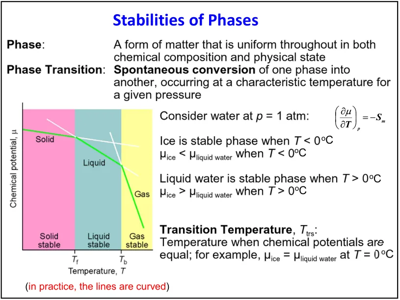
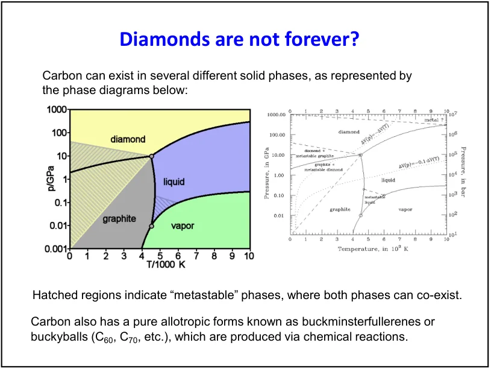
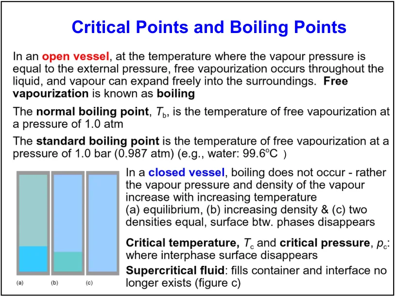
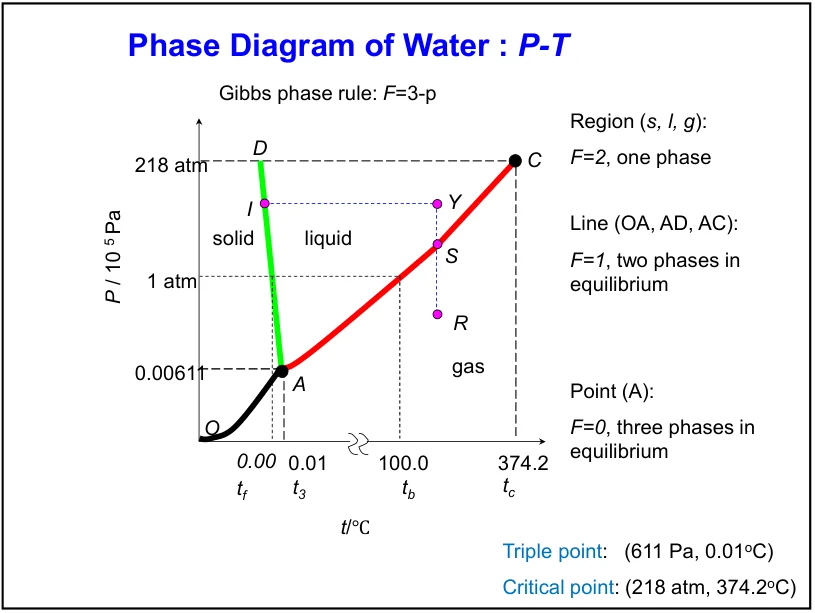
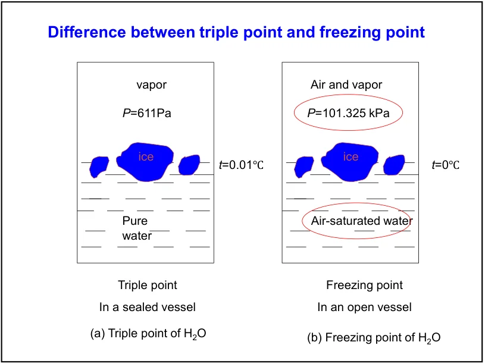
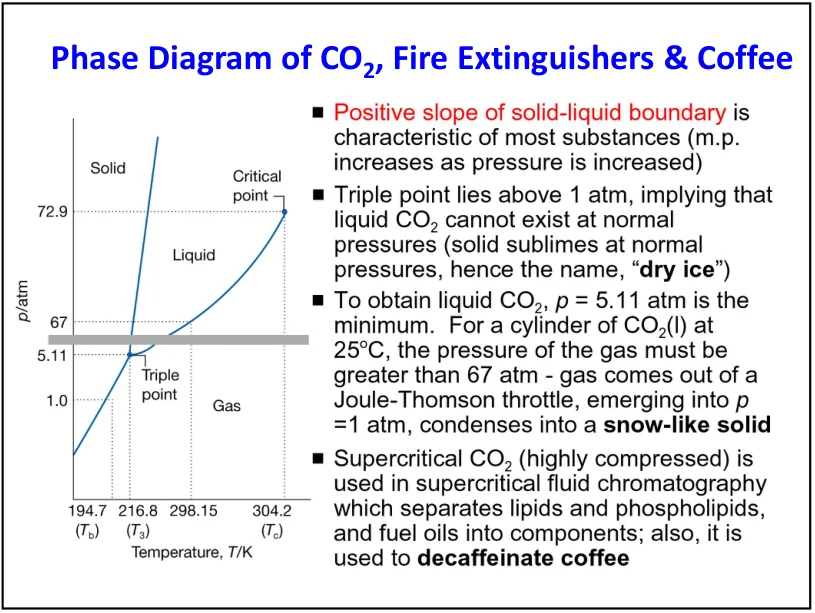
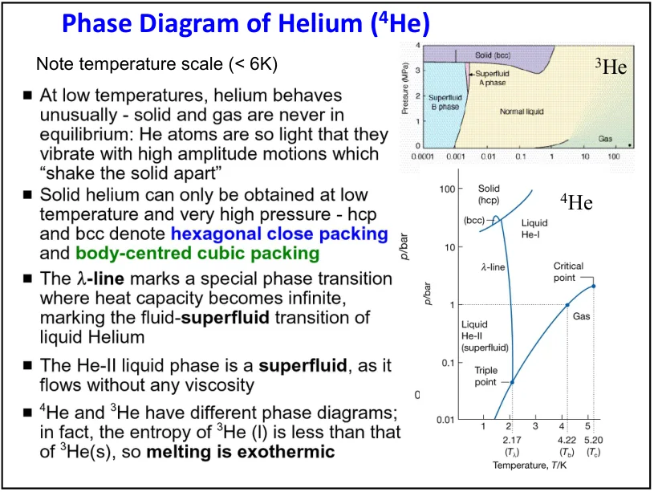

LECTURE 9 · 2026/10/15
相图与相的稳定性
Physical transformations of pure substances
1. 知识体系：相图是化学势最低相的地图
第8课建立了化学势。这一课用它回答：给定温度和压力，纯物质更愿意成为固体、液体还是气体？相图把稳定性判断画成区域、线和点；下一课再由各相的熵和体积推导相界线的斜率。
| 问题 | 热力学语言 | 相图表现 |
|---|---|---|
| 哪一相稳定？ | 给定T、p，比较各相μ | 稳定相对应最低μ |
| 何时两相共存？ | μα=μβ | 共存曲线 |
| 为什么有三相点？ | 三个μ满足两个独立相等条件 | 纯物质的T、p被固定 |
| 能否立刻发生相变？ | 驱动力与速率分别判断 | 稳定相图不能直接给出成核时间 |
为便于复习，本合集按内容整理：本页对应PDF第1–11页；第10课对应第12–23页。这是网站的教学分组，不表示原PDF已标出两次课堂的确切分界。
来源：本次课件PDF第1–11页；Atkins第11版 Topic 4A，§4B.1(a)。页码指PDF页面，每页通常含两张幻灯片。
2. 相、组分与Gibbs相律
相（phase）是化学组成和物理状态均匀的物质部分。许多碎冰块仍属于同一种相；冰和水共存是两相；同一种物质不同晶体结构可构成多个固相。相数不等于容器数或肉眼可见块数。
Gibbs相律中，C为独立组分数，P为平衡相数，F为保持相数不变时可独立改变的强度变量数。这里仅考虑通常的温度与压力，不额外引入磁场等独立外场。用小写p表示压力，避免与相数P混淆。
| 纯物质状态 | 自由度 | 能否独立选T与p？ |
|---|---|---|
| 单相区域，P=1 | F=2 | 可以在该区域内分别微调 |
| 两相共存线，P=2 | F=1 | 选择温度后，共存压力随之确定 |
| 三相点，P=3 | F=0 | 两者均为特征值；改变会失去三相共存 |
纯物质相律的约束数推导
单相先有T和p两个自由变量。两相需要满足μα=μβ，增加一个独立约束，剩1个自由度。三相满足μα=μβ和μβ=μγ两个独立约束，剩0个自由度。物质的总量和各相份额是广延信息，不包括在本相律的自由度里。
只有在特征温压下、三种相都有适量存在且达到平衡时，才是三相共存。改变总量可改变各相份额；若某相耗尽，相数与相律计数随之改变。
来源：本次课件PDF第1、8页；Atkins第11版 §4A.1、§4A.2(b)。页码指PDF页面，每页通常含两张幻灯片。
3. 恒温恒压下的稳定性与相变方向
纯物质一相的摩尔Gibbs能等于化学势：μ=Gm。假定体系可交换体积功、总量不变，温度与压力由环境维持。令dn>0的物质由α转到β：
因此若μβ<μα，α→β有降低G的自发趋势；若μβ=μα，两相达到物质交换平衡；若μβ>μα，反方向β→α降低G。这里的“自发”描述热力学方向，仍须另外判断速率。
| 判据 | α→β的G变化 | 含义 |
|---|---|---|
| μβ<μα | dG<0 | 正向具有自发趋势 |
| μβ=μα | dG=0 | 相平衡 |
| μβ>μα | dG>0 | 正向不利，反向有利 |
下半页写出dG=(μβ−μα)dn后，又写μβ>μα对应ΔG<0，符号不一致。按α→β且dn>0，正确条件是μβ<μα。PDF上半页使用μ₁>μ₂说明由1到2，实际上与此一致。
若某纯物质的μα比μβ高200 J·mol⁻¹，转移0.0200 mol到β，相应ΔG=−4.00 J。微小转移计算的量纲是“摩尔能量×物质的量”。在无重力、无外场等附加项的通常模型中，平衡化学势在同相内部和共存各相之间一致。
来源：本次课件PDF第3页；Atkins第11版 §4A.1(c)。页码指PDF页面，每页通常含两张幻灯片。
4. μ–T图：熵控制斜率，最低包络给出稳定相
由上一课纯物质摩尔形式基本方程：
(∂μ∂T)p=−Sm；(∂μ∂p)T=Vm
Sm为摩尔熵，单位J·mol⁻¹·K⁻¹；Vm为摩尔体积，单位m³·mol⁻¹；μ单位J·mol⁻¹。恒压升温时，通常气体摩尔熵最大，所以μ下降最快；液体其次，固体较缓。哪条曲线最低，哪一相在该条件下最稳定。熔点或沸点对应相邻稳定相μ曲线相交。

为什么示意线并不是真正的直线？
因为恒压下熵随温度变化，单相区中μ的曲率由摩尔热容Cp,m决定。稳定单相通常Cp,m>0、曲线向下凹。本式用于单相光滑分支；相变处需分别处理分支和不连续性。
升温会使各相μ都降低，决定相对稳定性的却是下降幅度。若液相摩尔熵大于固相，液相下降更快，在熔点以上可成为更低的那条分支。不能只说“温度高所以G一定高”。
来源：本次课件PDF第2页；Atkins第11版 §4B.1(a)。页码指PDF页面，每页通常含两张幻灯片。
5. 亚稳态、成核与金刚石
亚稳相不是给定条件下G最低的相，却可因转变存在能垒而长期保留。常温常压下石墨比金刚石热力学上更稳定；金刚石向石墨的键网络重排很慢，所以可以长时间保存。这个例子把“更稳定”与“转化快”明确分开。

过冷液体、过热液体也可能位于亚稳分支。新相小胚核会产生界面自由能代价，足够大的体相驱动力才可能克服成核能垒。灰尘、容器壁等可降低某些异相成核的能垒，但不会自动改变纯物质平面界面的相平衡条件。
van der Waals不稳定回线被两相共存平台替代，是平衡状态选择；真实样品为何暂时停留在过冷或过热状态，属于成核与动力学问题。亚稳态、稳定两相共存和机械不稳定区要分别判断。
来源：本次课件PDF第4–5页；Atkins第11版 §4A.1(b)。页码指PDF页面，每页通常含两张幻灯片。
6. 相界线、沸点、三相点与临界点
| 概念 | 定义 | 容易混淆之处 |
|---|---|---|
| 相界线 | 两个相的化学势相等所确定的共存条件 | 稳定边界与亚稳延拓不应混画而不注明 |
| 饱和蒸气压 | 凝聚相与其蒸气达到平衡时，蒸气的压力 | 存在空气等其他气体时要区分蒸气分压与总压 |
| 正常沸点 | 饱和蒸气压等于1 atm时的温度 | 标准沸点取1 bar，二者略有不同 |
| 三相点 | 同一纯物质三种相在特征温压共存 | 三相不一定必须是固、液、气，也可包含不同固相 |
| 临界点 | 液–气共存曲线终点，两相区别消失 | 不是三相点，不能继续沿普通沸腾线延伸 |
沸腾要求蒸气压能与外部压力相匹配，才能支持体相气泡增长。刚性密闭容器加热若存在液–气共存，压力随温度沿饱和曲线升高；不能无条件沿1 atm路径解释。能否最终达到临界状态还取决于总体积与总量：某相可能先耗尽。

超临界流体通常指T>Tc且p>pc的流体区。当T>Tc时，单靠等温压缩不能越过普通液–气共存线；若压力低于pc，仍可称气体样流体，不能把所有高于临界温度的状态都直接叫超临界流体。
来源：本次课件PDF第6–7页；Atkins第11版 §4A.2(a)。页码指PDF页面，每页通常含两张幻灯片。
7. 水的相图：负熔化斜率与三相点
普通冰I熔化时体积减小：ΔfusVm=Vm,l−Vm,s<0。升压使冰的μ上升更多，因而促进熔化、降低熔点。该结论针对普通冰I附近；高压冰结构更复杂，不能把“水的全部固–液边界都为负斜率”当通则。

水的三相点温度273.16 K（0.01℃），压力约611.657 Pa；液–气临界温度647.096 K、压力22.064 MPa。课件611 Pa、218 atm用于定性示意足够，但本页使用更精确数值并明确单位。数据依据IAPWS水与蒸汽数据。

三相点与常见0℃凝固状态不是相同实验条件。由611.7 Pa升到1 atm，普通冰熔点约降低7.3 mK；溶解空气又会降低凝固温度。纯水在1 atm的平衡熔点与空气饱和水的凝固点略有差别，不要把0.01℃与0℃的全部差别只归因于压力。
空气与水蒸气共存的气相包含多组分，液体又可能溶有气体，不能直接把这个开放体系当作严格单组分纯水并机械套F=3−P。教材与课件对比用于说明条件影响。
课件高压水图展示多个固相和多个三相交点。“多个三相点”不违反相律：每一个交点属于不同三相组合，各有确定温压。新冰相发现也使“水只有8个三相点”这类固定数量不适合作为普遍结论。
来源：本次课件PDF第8–9页；Atkins第11版 §4A.3(b)。页码指PDF页面，每页通常含两张幻灯片。
8. CO₂与⁴He：三个代表相图的对照
CO₂三相点约5.11 atm、216.8 K，压力高于普通大气压。因此1 atm下固体CO₂升温直接升华，不能先形成稳定液态，这就是“干冰”。其临界点在课件与教材中近似列为31.1℃、72.9 atm。用足够高的压力可使室温CO₂处于液态，越过液–气临界区域则可连续连接液体样和气体样状态。

灭火器减压释放CO₂时可能出现冷却与细小固体；这一过程还与前课Joule–Thomson效应及实际路径有关，不能从平衡相图单独得到全部瞬态行为。超临界CO₂用于萃取的课堂例子包括咖啡脱咖啡因：温压可调节流体密度及溶解行为。

⁴He在普通大气压下不会仅因不断冷却就变成固体，固化需施加高压；其轻原子、弱相互作用和零点运动使量子效应显著。He-I为正常液体，He-II具有超流组分，二者由λ线分隔，饱和蒸气压附近转变温度约2.17 K。³He与⁴He统计性质不同，³He的超流转变出现在更低温区，不能互换相图。
| 物质 | 最应抓住的图形特征 | 热力学原因 |
|---|---|---|
| 水（普通冰I附近） | 固–液线负斜率 | 熔化体积变化为负 |
| CO₂ | 三相点在1 atm以上 | 1 atm不经过液体稳定区 |
| ⁴He | 高压固体与两个液态区域 | 量子效应与超流转变 |
PDF第11页下半页是课外能源拓展。D–³He的主反应属于少中子方向的研究，不等于整个反应器完全没有中子或已经商业化；DOE也强调其所需温度及供应链困难。课件“12.5倍裂变能量”未统一每次反应与单位质量的比较基准，月球储量和常温提取数字未在这里建立来源，均不纳入本章考试事实。DOE核聚变燃料说明。
来源：本次课件PDF第10–11页；Atkins第11版 §4A.3(a,c)。页码指PDF页面，每页通常含两张幻灯片。
9. 应试笔记、静态问答与第9课测验
读p–T图按四步：先确认轴及单位，再找区域/共存线/交点，然后沿给定路径判断相数变化，最后用相律检查自由度。不要把相份额、总量、路径速度算成自由变量。
| 题型 | 解题要点 | 条件 |
|---|---|---|
| 判断相变方向 | 比较目标相μ与初相μ，代dG=(μβ−μα)dn | 恒温恒压、dn正向定义 |
| 看μ–T图 | 斜率为−Sm，找最低包络 | 同一压力；同类示意图曲线可局部近似直线 |
| 数自由度 | F=C−P+2，纯物质F=3−P | 平衡、通常只有温压作为外场变量 |
| 三相点/临界点 | 前者是三个相，后者是两流体分支区别消失 | 不要简单把临界点当作普通二相线上的两相 |
| 解释亚稳 | 热力学驱动力存在，但有成核或结构重排能垒 | 稳定相图不能给出具体速率 |
熵并不是唯一能量项。比较μ=Hm−TSm时，低温下焓项相对更重要；升温则使高熵气相的−TS贡献更有利。具体转变温度由两相μ相等决定。
固定的是维持同一三相共存的强度变量。总量和相份额仍可变化，只要三相没有被全部耗尽；相律并不直接计数这些广延量。
第9课测验：22题，32分 ↗ 继续第10课：相界线与相变类型 →
教材来源：Atkins第11版Topic 4A及§4B.1(a)，印刷页120–128（PDF页160–168）。课件PDF第3页不等号已校订，第8页水的临界温度采用IAPWS数值。